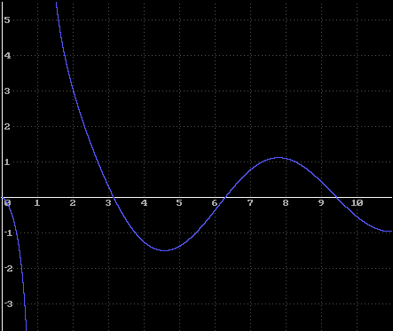

Overview
Overview
Regarde can:
- plot polynomials, trig, absolute value, inverse trig, hyperbolic and log functions in the form y=f(x),
- show applications of calculus, work out and plot the derivatives of equations (dy/dx),
- display several graphs on screen at the same time, allowing you to solve equations graphically,
- zoom in and out,
- print your graphs,
- save your graphs for later use in other applications.
|  |
| y=sin(x)/ln(x) graphed in Regarde. |
Regarde has a simple, easy to use interface. Equations can be typed directly in with the keyboard or entered using onscreen buttons. You do not need to learn any special commands or formats - to plot a hyperbola for example, you just type "y=1/x" or use the onscreen buttons. Here is a screen shot showing Regarde's interface and the plot sidebar:
Once you have plotted a graph, you can zoom in and out or centre the axes anywhere on the screen. Also, the gradations on the axes can be set to your needs - they can even be set to pi. The numbers on the axes and the grid can be turned on and off. Saving or printing graphs is simple - it's just a matter of clicking the save or print buttons. Regarde can even plot functions such as y=xx, y=|1/x| and y=d/dx( sin-1(cosx) ) accurately, unlike many other plotting programs which join discontinuities. This is due to Regarde's advanced plotting engine. Click here for more details.
If you are interested in seeing more curves plotted in Regarde or screen shots of Regarde's graphical interface, click here.
A Regarde demo is available. It allows you to do everything that can be done in the registered version (such as plotting curves and their derivatives) except print and save graphs. However, it has a 21 day trial period.
Purchasing Regarde! - Equation Graphing Software is simple. Click here for more details. If you have any questions on Regarde's curve plotting abilities or interface just contact me.
Site designed and maintained by Crisp Design.